A study room that stays on your computer
Time, notes, books and flashcards in one place, for languages, a degree, research or anything else you are learning. No account, no cloud, and nothing leaves your computer unless you turn something on.
Download for Windows Download for Mac Read the guide
Free to download and use. Windows 10 and 11 (64-bit), and macOS 11 or newer on Apple Silicon and Intel; there is no Linux version yet. Windows may say “Windows protected your PC” the first time, because the program is not signed with a paid certificate: choose “More info”, then “Run anyway”. A Mac asks once too: see Install on a Mac (System Settings, Privacy & Security, “Open Anyway”).

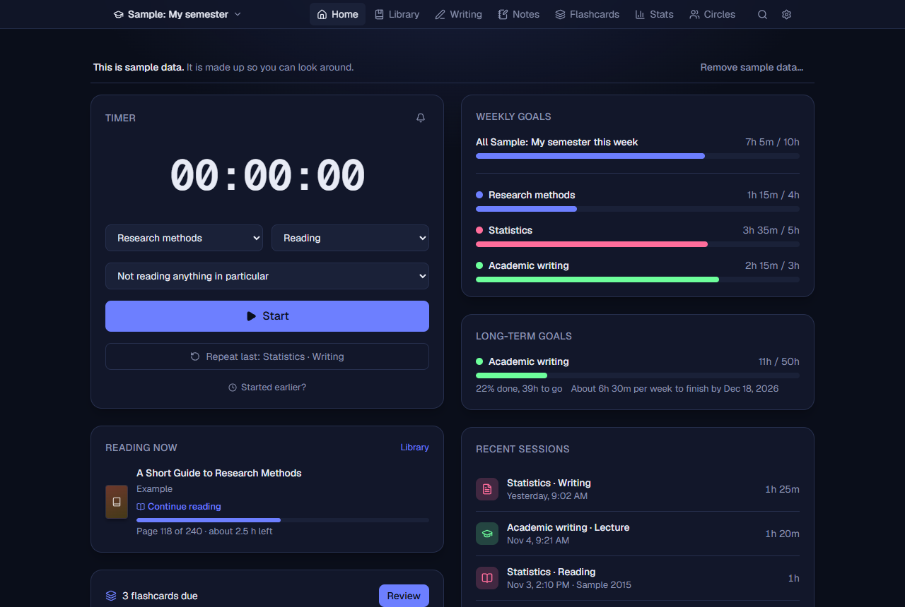
What it does
Everything a student or self-learner tends to keep in five different places, in one program that opens in your browser and runs on your own PC.
Timer and log
Start, pause and stop a session for a course or subfield and an activity, add a past one by hand, and see your streak. Break reminders are optional.
Goals and stats
Weekly goals for each course, long-term goals with a pace to finish on time, a calendar of your days, and charts of where the time went.
Several rooms
One for a language, one for your degree, one for a hobby. Each has its own courses or topics and activities, and an overview shows them all together.
Notes that link
Formatted notes with screenshots, tied to a course or a book. Link notes with double brackets and explore how they connect in a graph.
A library
Look up a book by its ISBN or an article by its DOI, keep the cover, track the page you are on, write notes with page numbers and copy citations (BibTeX and RIS).
Optional AI, on your terms
Ask questions about your own notes and get answers that name their sources, and make flashcards. It is off until you turn it on, and it uses a model on your computer (Ollama) or your own online key, never ours.
Backups you can use
A copy is saved every day, you can restore one with a preview first, and take everything with you as one file or a zip of readable data. If the data file is ever damaged, Voynich lists the saved copies and puts one back.
Themes and comfort
Dark, light, black, forest, rose and a glassy Aero theme, or your own colours, font and text size. Text contrast is checked in every theme, everything can be done with the keyboard, and the controls are labelled for screen readers.
Updates itself, if you want
Check for a newer version when you like, or let Voynich install updates by itself the next time it starts. Only updates signed with Voynich’s own key are installed automatically.
A closer look
Click any picture to see it larger. All of them show made-up sample data, and the full manual has more.

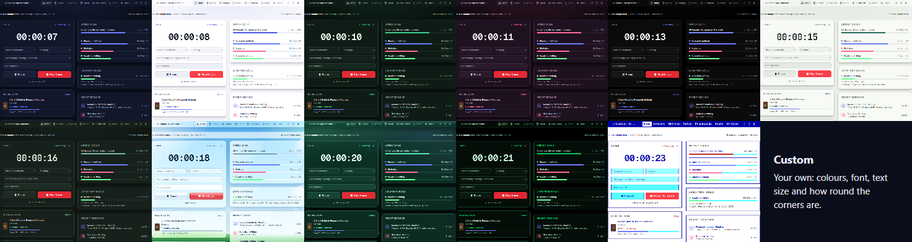

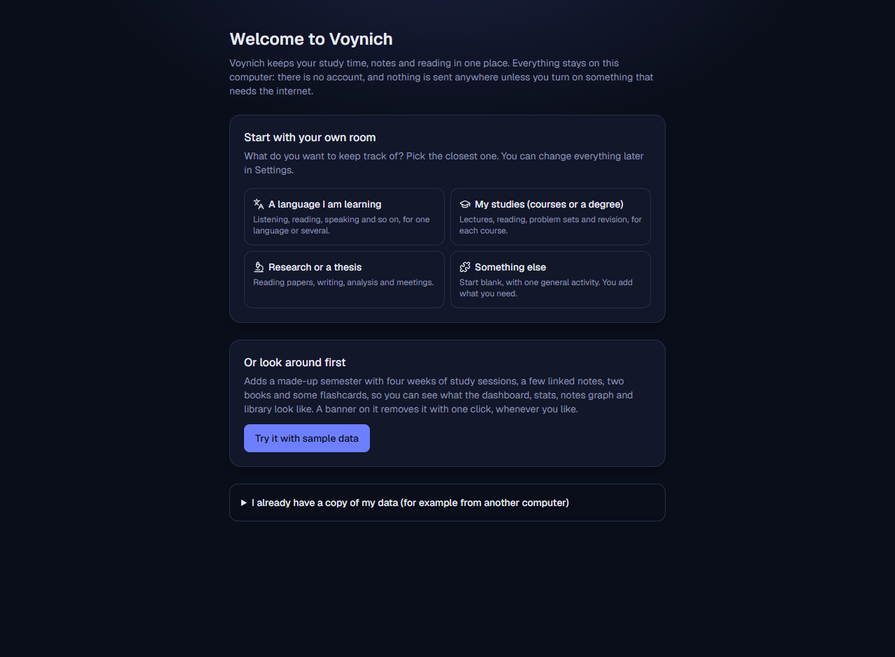

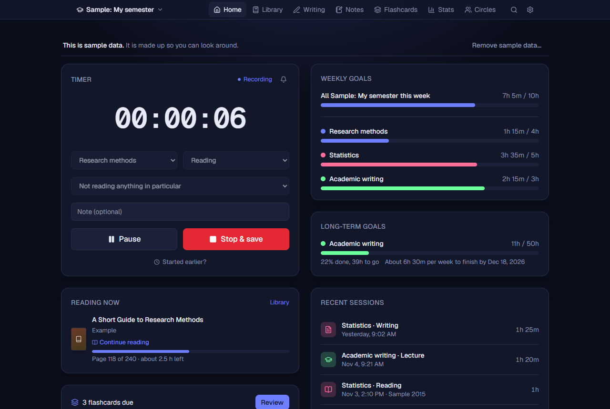

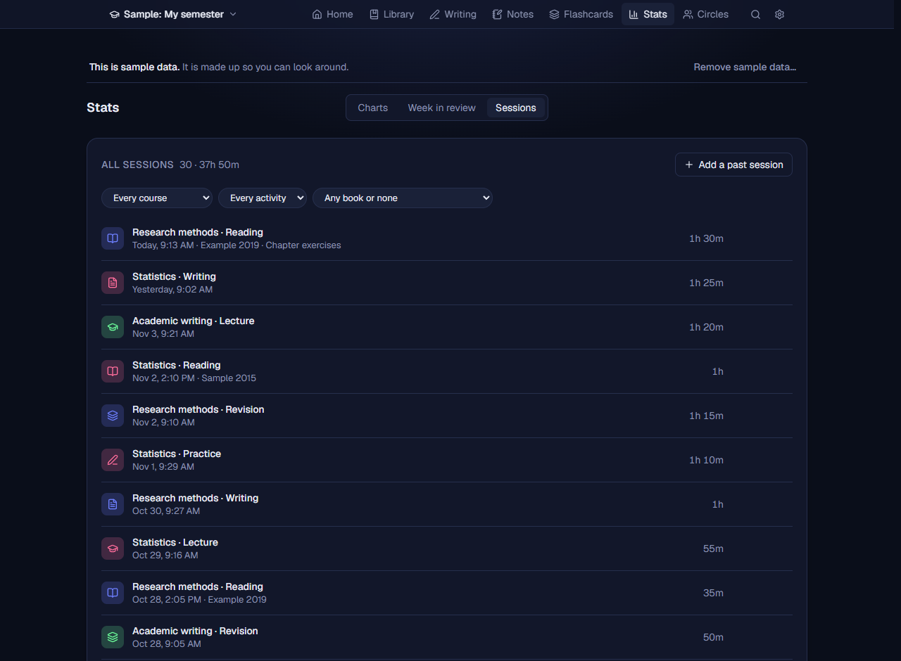

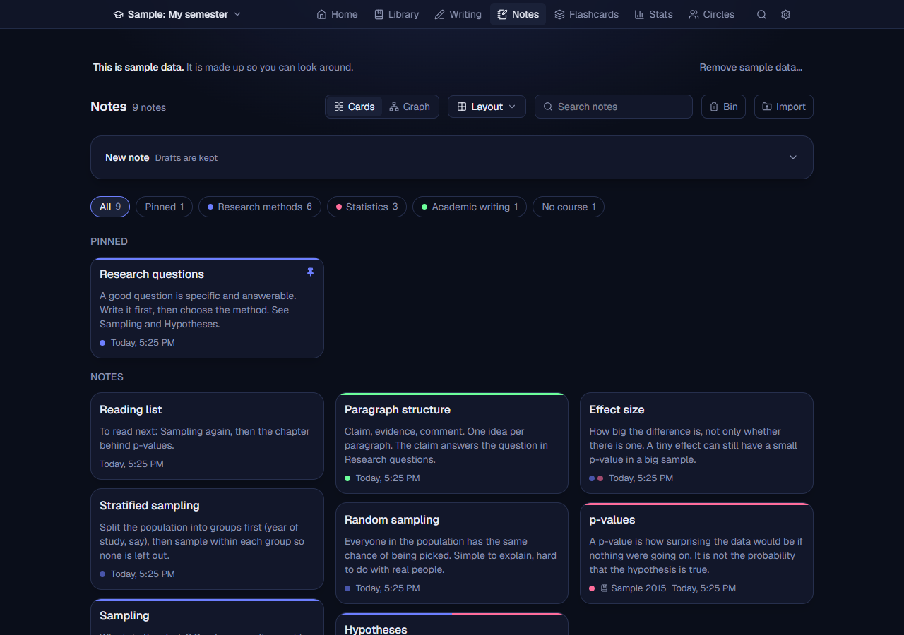

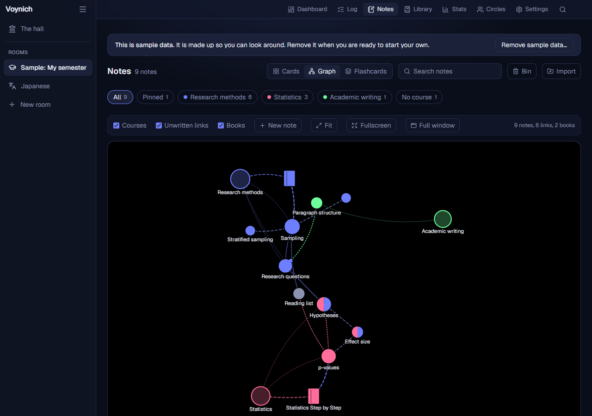

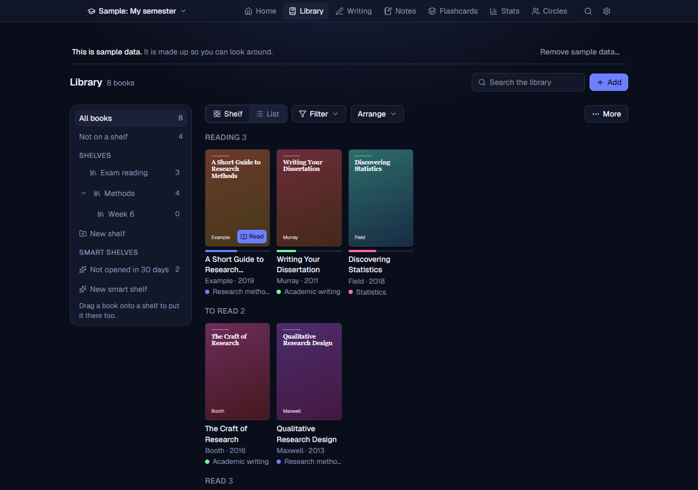

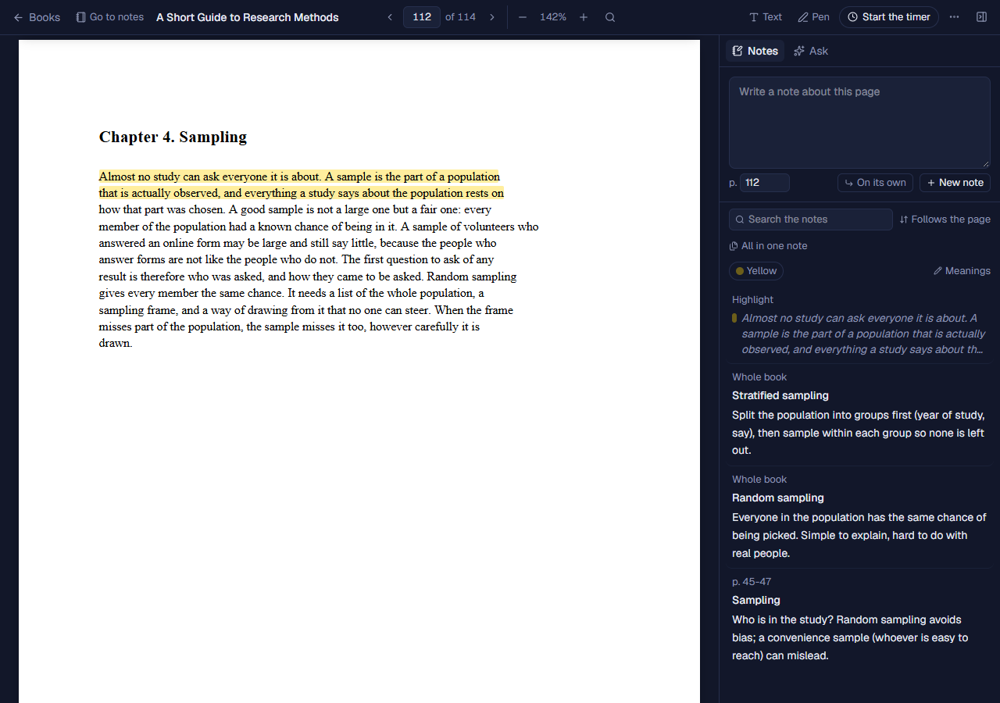

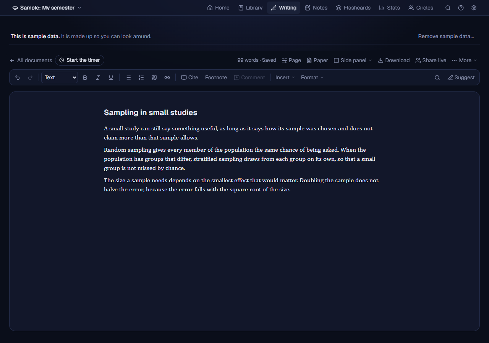

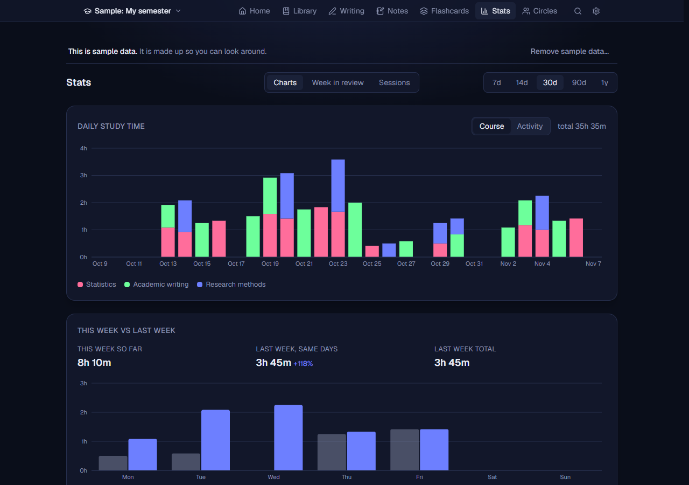

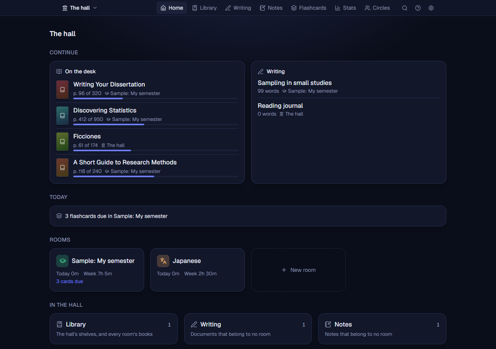

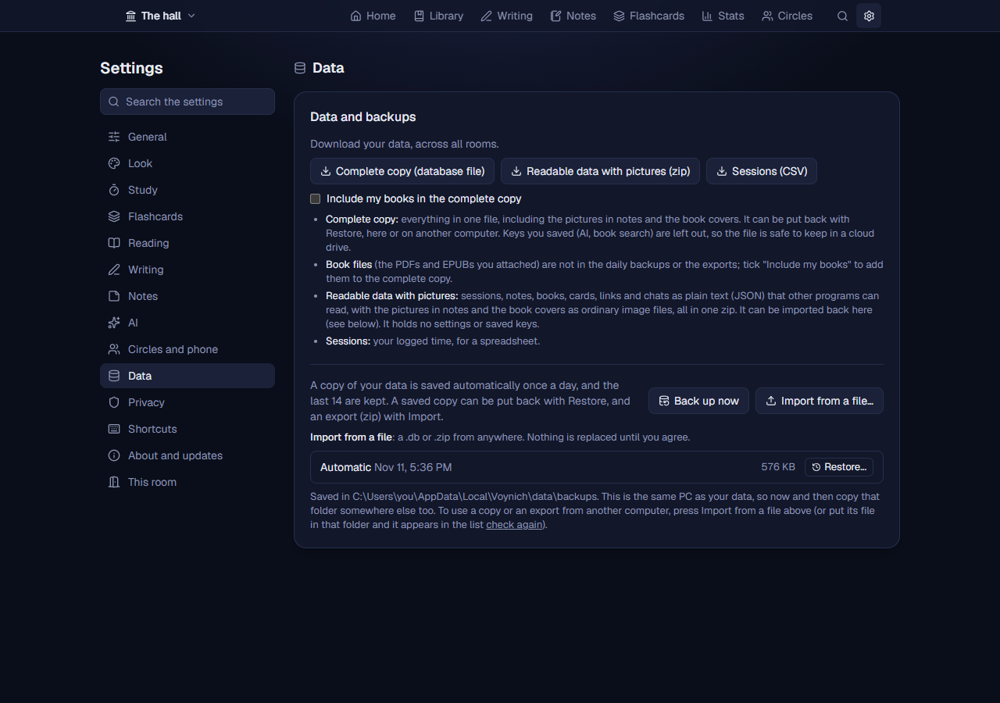

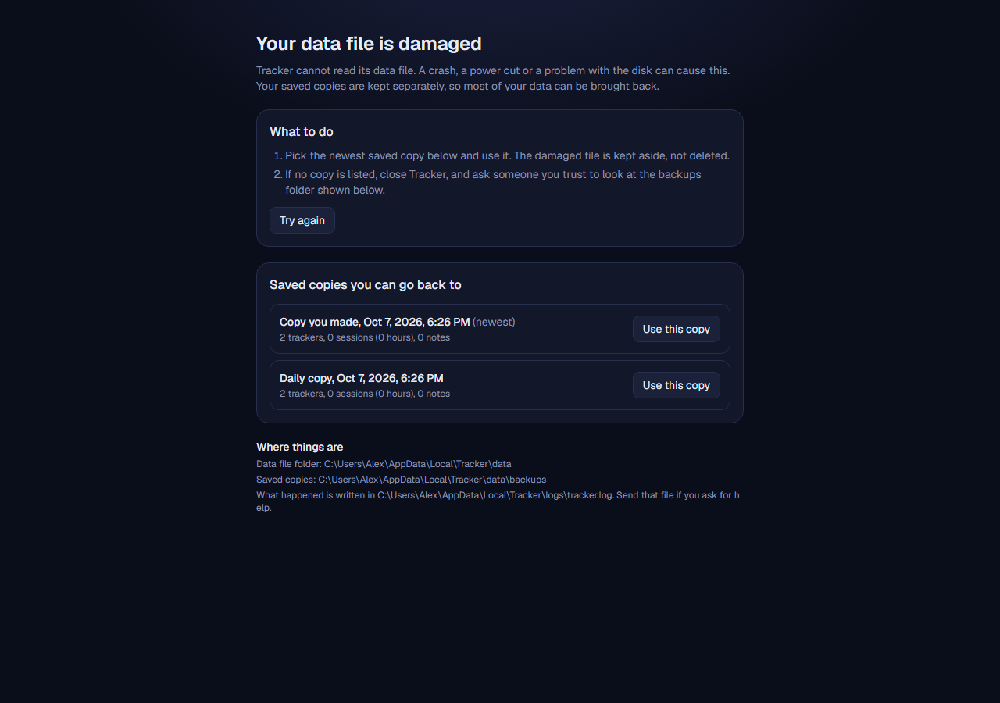
Learn it your way
Two guides, written for people who are not technical.
Getting started in ten minutes
Install it, make your first room, log a session, set a goal, write a linked note, add a book and keep your data safe. Eight short steps with pictures.
The full manual
Every part explained, from the timer and the library to backups, updates, privacy and what to do when something goes wrong. Twenty-four sections, with a contents list on the side.
Your data stays with you
Voynich has no account and no server of its own. Everything you log, write and save is kept in one file on your computer.
What can leave your computer, and only when you use it:
- Book and article search sends the ISBN, DOI or words you type to Open Library, Crossref and (if you saved a key) Google Books or ISBNdb. Only when you press Search, or drop a book file that names its ISBN (this can be turned off).
- Cover pictures are loaded from the cover sites when search results show them. Turn covers off and none is loaded.
- Reading a scanned book (OCR) downloads each language’s reading data once from jsDelivr, the first time you use it. The pages are read on your computer and never sent.
- The AI tab is off by default. With a model on your own computer, nothing leaves it. With an online service you choose and give a key to, the text it needs to answer does go to that service.
- Your phone is off by default. Turn it on and pair a phone, and that phone opens Voynich on your computer over your own Wi-Fi (or Tailscale), with nothing in between.
- Writing together live is off until you share a document: then that one document goes to the browser of whoever opens its link, over your own network or Tailscale, and nowhere else.
- A study circle is off until you make or join one: then your Voynich finds the other members through a public directory and connects to them directly, encrypted. They see your name in it, who is in it and who is online, and each other’s internet addresses; and, only for the rooms you choose to share with that circle, each day’s study minutes and flashcard answers and your streak, the decks you choose to share (without your progress), your page in a book you read together (its details, never the book), and the messages you write in its chat. Nothing else of yours.
- Sync between your own computers is off until you start it: then your other computers that join with its invite get a copy of your notes, books, cards and the rest, directly and encrypted, and nobody else does.
- Updates ask GitHub for one small file when you press Check now, or once a day if you turn that on. They carry only the program’s name and version.
There are no analytics, crash reports or advertising, and the program only answers to your own computer (and to phones you pair yourself, if you turn that on; a circle’s members reach only the circle’s own small program, never Voynich). Inside Voynich, Settings, Privacy lists all of this again with your own settings, and it is checked against the program’s code by a test.

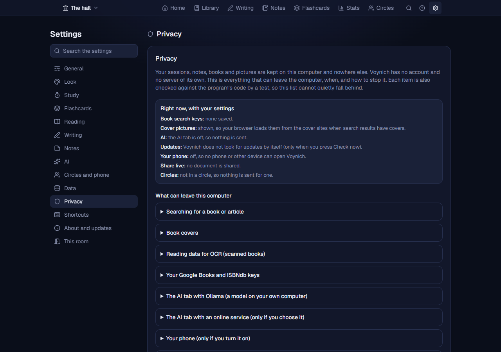
Install it
- Download
Voynich-Setup.exe(always the newest version). Older versions and checksums are on the releases page. - Open it. If Windows says “Windows protected your PC”, choose “More info” and then “Run anyway”. It does not need administrator rights.
- Click Next and Install. Voynich opens in your browser, and a small icon near the clock opens or quits it.
- On a Mac: download
Tracker-Mac.dmg, open it and drag Tracker onto the Applications folder (on a Mac it keeps the old name, Tracker, for now: the same version as on Windows). The first time, macOS asks you to allow it once (how). Its icon is in the menu bar.
Your data is kept in %LOCALAPPDATA%\Voynich\data (on a Mac, ~/Library/Application Support/Tracker/data). Installing a newer version over an old one keeps it. To check a download, each release lists the SHA-256 checksum of its downloads.
Questions
Is it really free? Is it open source?
It is free: downloading and using Voynich costs nothing. It is not open source: the program’s code is not published. The terms of use say what you may do with it.
Does it work without the internet?
Yes. The timer, log, notes, goals, stats, backups and the AI tab with a model on your own computer all work offline. Only book lookups, covers, updates and an online AI service need a connection.
Can I move to another computer?
Yes. In Settings, Data you can take everything with you as one file or as a zip of readable data (pictures included), and restore it on the other computer. Saved keys are left out of those files on purpose.
What if something breaks?
Voynich explains problems in plain words (a full disk, a damaged data file) and keeps a log file; Settings, About and updates shows where. If you ask for help, read the log first: a failed save can leave a piece of what you were saving in it. You can open an issue on GitHub, or write to clite.ka@gmail.com.
How do I get in touch?
Write to clite.ka@gmail.com, or open an issue on GitHub if you have a GitHub account. Questions, problems and ideas are all welcome.
What about Linux?
Not yet. Voynich runs on Windows 10 and 11 (64-bit) and on macOS 11 or newer (Apple Silicon and Intel).